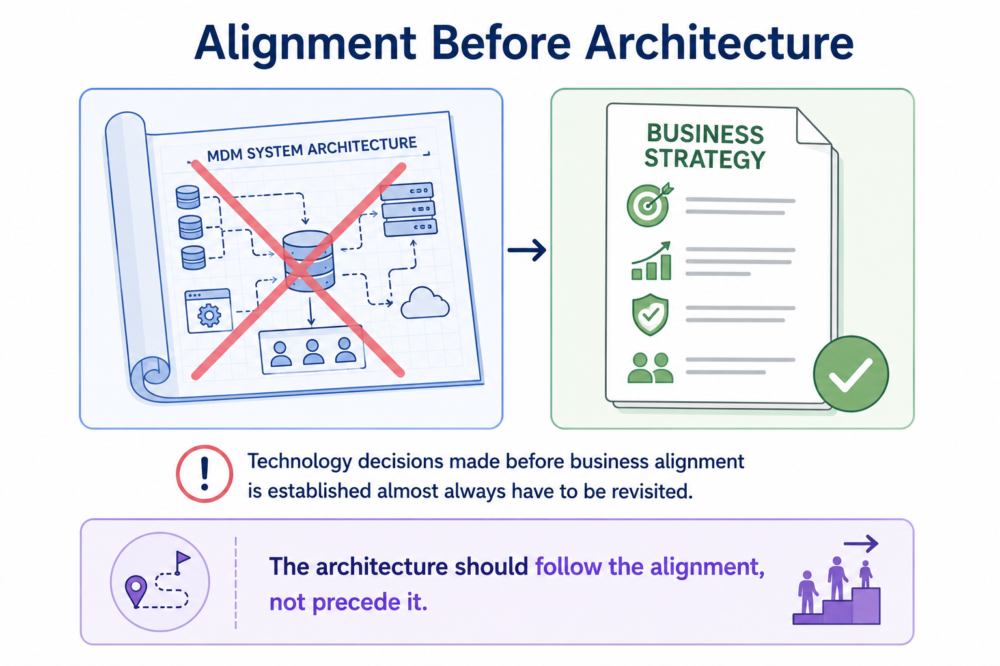
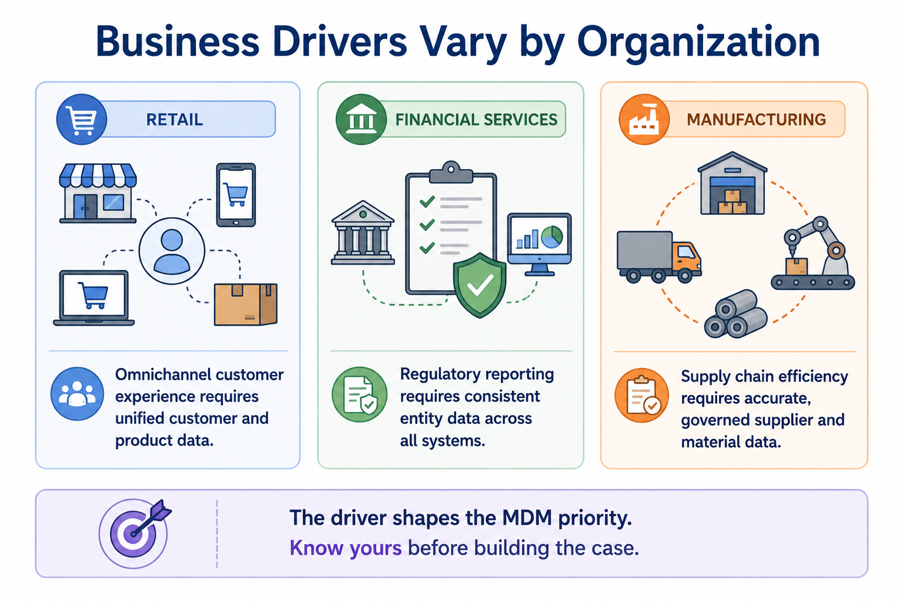
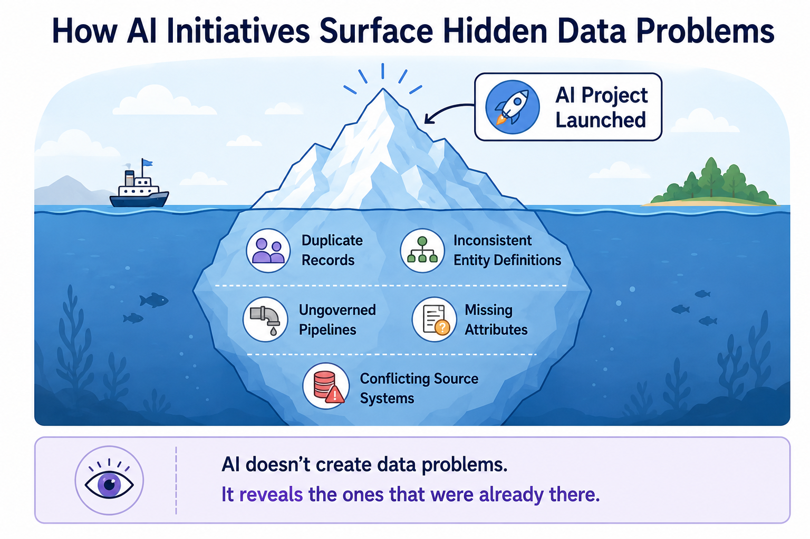
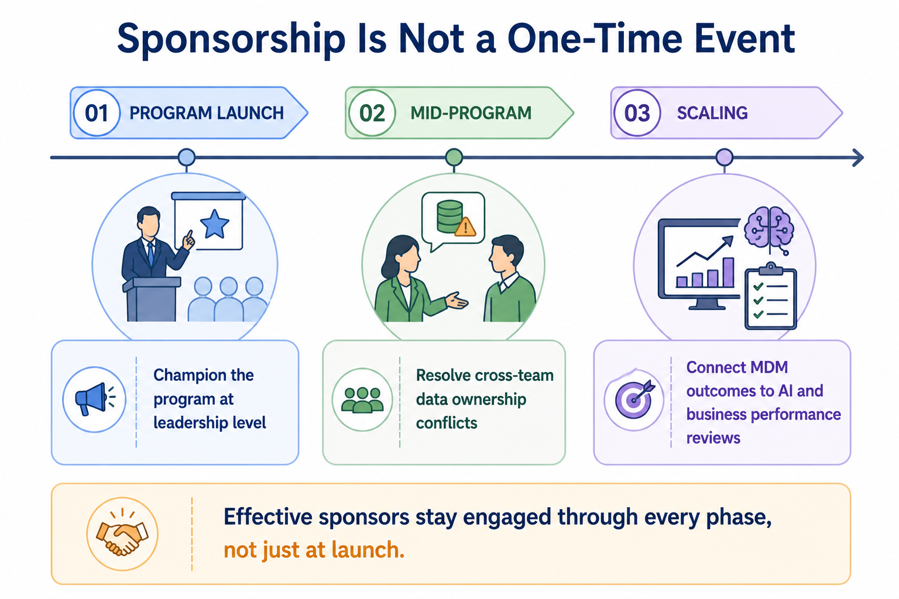
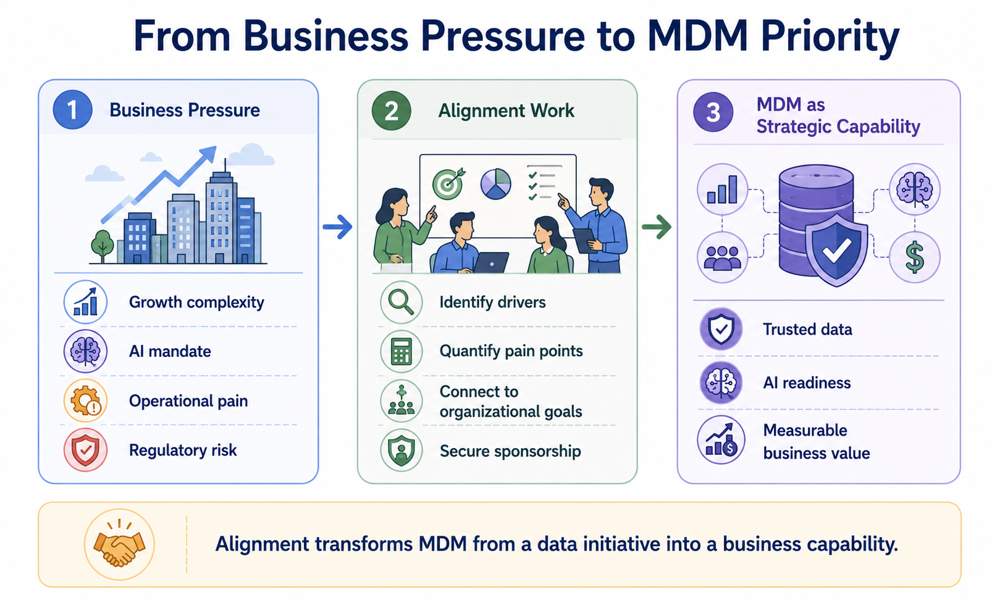

Aligning MDM with Business Priorities
Module support notes
Why Alignment Is the Starting Point
Many organizations treat MDM as an architecture problem — selecting platforms, designing data models, and building pipelines before answering a more fundamental question: which business priorities does this program serve?
When the business case is built after the technology decisions, it tends to be reverse-engineered to justify what was already purchased rather than to guide what should be built. Starting with alignment keeps the program grounded in outcomes that business leaders recognize and value.
Warning
Technology decisions made before business alignment is established almost always have to be revisited. The cost isn't just financial — it's the organizational credibility lost when MDM is repositioned mid-program because no one agreed on what it was supposed to accomplish.

Understanding Business Drivers in Practice
Business drivers are not generic — they are specific to the organization's industry, competitive position, and strategic moment. A retailer investing in personalization has a different MDM driver than a bank preparing for a regulatory audit or a manufacturer rationalizing its supplier base.
Effective MDM business cases identify the specific driver creating urgency right now, rather than making a general argument for better data. The more precisely the case is tied to a real business pressure, the easier it is for executives to fund and prioritize.
- Retail: omnichannel customer experience requires unified customer and product data
- Financial Services: regulatory reporting requires consistent entity data across all systems
- Manufacturing: supply chain efficiency requires accurate, governed supplier and material data

The AI Pain Point Accelerator
One of the most significant shifts in MDM investment patterns in recent years is the role AI initiatives play in surfacing data problems organizations had previously tolerated. When a machine learning model produces unreliable predictions, or a generative AI assistant gives inconsistent answers about the same customer, the root cause is almost always the quality of the underlying master data.
AI projects have become an accelerant for MDM investment because they give data quality problems a visible, executive-level consequence — one directly tied to the organization's most prominent strategic bets.
Note
AI doesn't create data problems — it reveals the ones that were already there. If your organization has launched an AI initiative that is underperforming, the business case for MDM investment is already sitting in the gap between expected and actual AI output.

Securing and Sustaining Executive Sponsorship
Securing executive sponsorship at program launch is necessary but not sufficient. The most successful MDM programs maintain active sponsor engagement through the life of the initiative — particularly at moments of organizational friction, when business units disagree on data ownership, or when competing priorities threaten MDM resourcing.
Sponsors who remain engaged beyond the launch phase provide the ongoing organizational authority that keeps MDM from being deprioritized when the next urgent initiative emerges.
Tip
Structure sponsor involvement across three phases: at launch, to champion the program at the leadership level; mid-program, to resolve cross-team data ownership conflicts; and at scale, to connect MDM outcomes to AI and business performance reviews. Sponsors who only show up at kickoff are sponsoring a launch, not a program.

When business pressure, alignment work, and executive sponsorship come together, MDM stops being a data initiative and starts functioning as a strategic capability.
